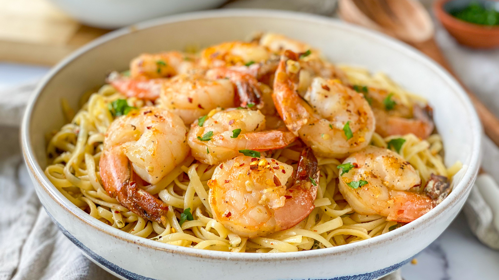

SHRIMP SCAMPI WITH PASTA

Buttery, garlicky, irresistible shrimp scampi—but make it pasta.
This quick and easy shrimp scampi pasta recipe is a fan-favorite,
with more than one thousand ratings and hundreds of reviews. And
it's ready to serve in only 40 minutes. Read on to get tips to
make the best shrimp scampi with pasta — it's a top-rated recipe
that's simple enough for weeknight dinners and fancy enough for
a dinner party.
Ingredients
- 1 (16 ounce) package linguine pasta
- 2 tablespoons butter
- 2 tablespoons extra-virgin olive oil
- 2 shallots, finely diced
- 2 cloves garlic, minced
- 1 pinch red pepper flakes (Optional)
- 1 pound shrimp, peeled and deveined
- 1 pinch kosher salt and freshly ground pepper
- ½ cup dry white wine
- 1 lemon, juiced
- 2 tablespoons butter
- 2 tablespoons extra-virgin olive oil
- ¼ cup finely chopped fresh parsley leaves
- 1 teaspoon extra-virgin olive oil, or to taste